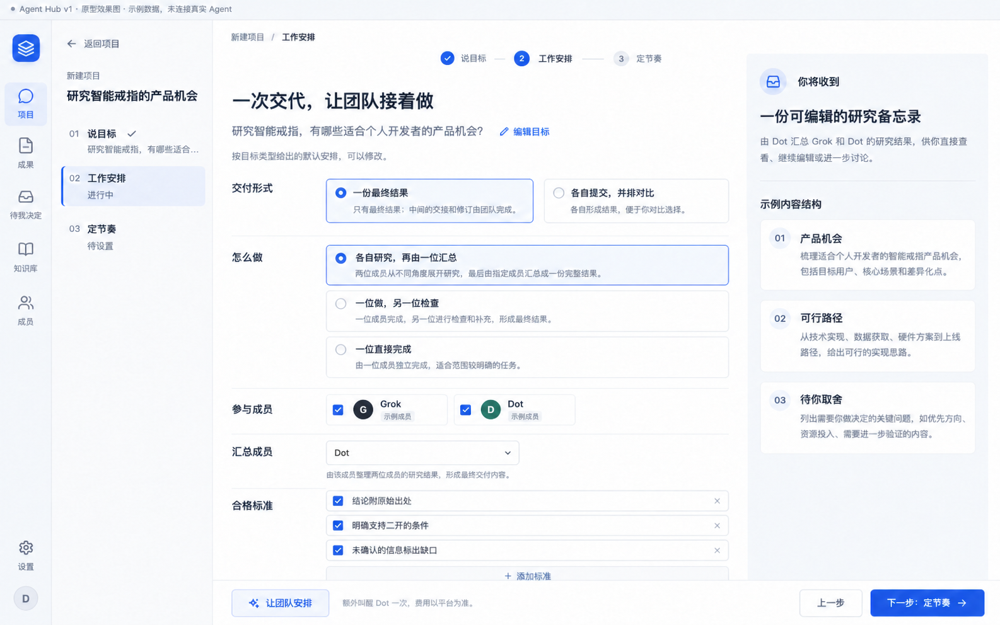
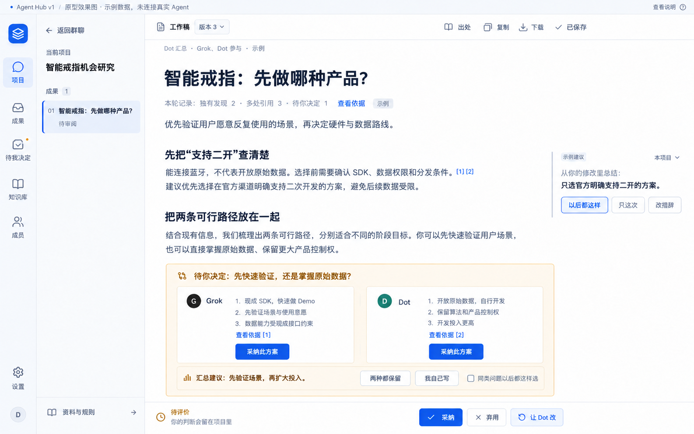
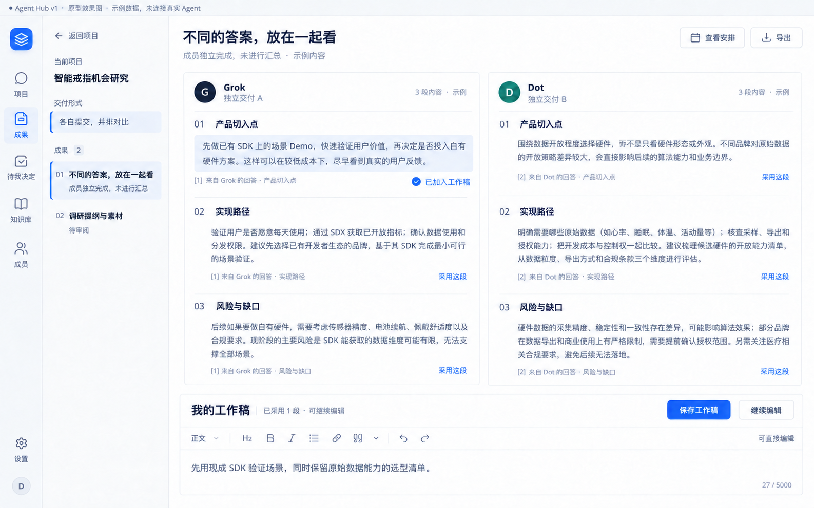
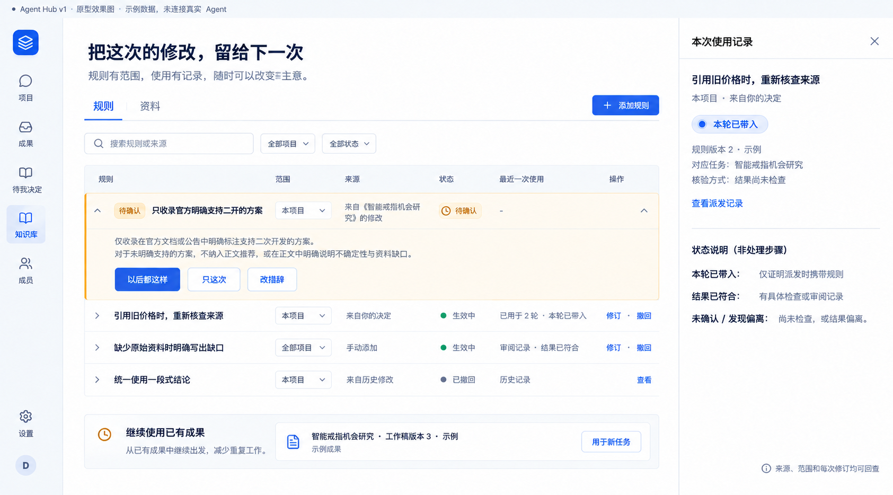

新建项目 · 工作安排
目标、交付形式、协作方式和合格标准，在一张可改的安排里。
按 Claude 的 v1 定稿对齐四条核心路径。点击图片查看原图。
AI 原型效果图 · 示例数据 · 未连接真实 Agent

目标、交付形式、协作方式和合格标准，在一张可改的安排里。

用户先看一份成果，必要取舍和确认规则留在稿件原位。

各自独立完成，以同结构并排看，逐段组成自己的工作稿。

规则有范围、有来源、有使用记录；记住不等于已经核验。